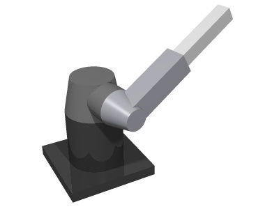

Juntas rotativas orientam o braço e um movimento linear amplia ou reduz o alcance.
ROBÓTICA INDUSTRIAL / POLAR
ROBÔ POLAR
Alcance em coordenadas esféricas.

POLARCATÁLOGO TÉCNICO05 / PERFIL DO ROBÔ
ALCANCE AMPLO EM COORDENADAS ESFÉRICAS.
O robô polar combina movimentos rotativos com um braço que se desloca linearmente, criando um volume de trabalho associado a coordenadas esféricas.
A geometria permite cobrir uma região ampla ao redor da base em determinadas configurações.
Aplicações industriais de movimentação e alcance em que a geometria polar favorece o processo.
01 / CONCEITO
COMO FUNCIONA
O robô polar ou esférico combina juntas rotativas com um movimento linear do braço telescópico, formando uma área de trabalho associada a coordenadas esféricas.
CARACTERÍSTICAS
- Duas juntas rotativas em configurações clássicas
- Um movimento linear
- Braço telescópico
- Grande área de alcance
- Aplicações que exigem resistência e alcance
02 / APLICAÇÕES
ONDE É UTILIZADO
FundiçãoSoldagemManipulação de materiais pesadosMovimentação de peçasAmbientes industriais de maior exigência
03 / INDÚSTRIA 4.0
INTEGRAÇÃO COM IoT
Sensores e monitoramento remoto podem acompanhar posição, ciclos e condições do equipamento. A integração com IoT ajuda a registrar dados operacionais.
SENSORES→CONTROLADOR→ROBÔ→DADOS
04 / MERCADO
FABRICANTES E MODELOS
FANUCmodelos esféricos/legados
Kawasaki Roboticsmodelos esféricos/legados
Yaskawasoluções históricas de robótica polar
Os exemplos representam fabricantes conhecidos do setor; modelos e especificações variam conforme aplicação.
01
Polar
O desempenho depende de fatores como carga, alcance, precisão, velocidade, ferramenta e configuração da célula.
02
Aplicação
A escolha do tipo de robô deve considerar a tarefa, o espaço disponível, os requisitos de segurança e o processo produtivo.
03
Conectividade
Sensores, controladores e redes permitem acompanhar o processo e transformar dados operacionais em informações úteis.